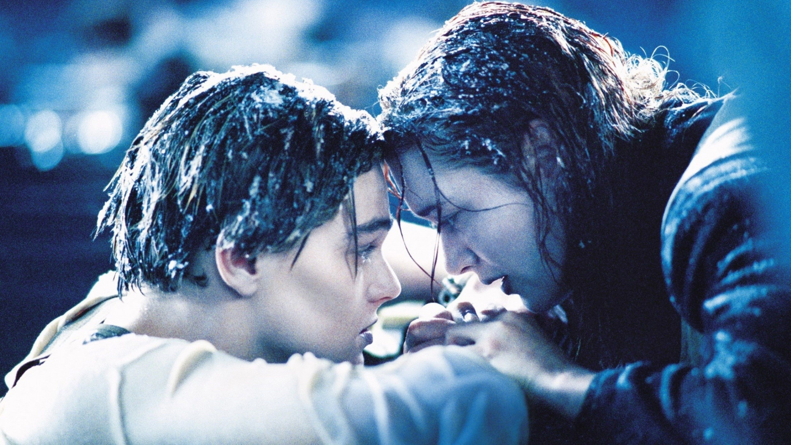
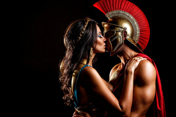

1.ROMEO AND JULIET
The first time Romeo saw her, the world stopped. There, bathed in torchlight
at a masquerade she was never meant to attend, Juliet laughed—a sound so bright it
cut through the bitter feud between their families like a blade through silk. Their eyes met,
and in that heartbeat, something dangerous was born..
2.JACK AND ROSE

On the doomed voyage of the Titanic, Jack, a penniless dreamer, meets Rose, a woman suffocating in luxury. Their worlds collide in a spark of forbidden love, defying class, fate, and time. But as the ship sails into darkness, so does their fragile chance at forever.
3.ORPHEUS AND EURYDICE
In a world where music could move mountains, Orpheus played with a soul so pure that even the gods paused to listen. When his beloved Eurydice was taken too soon, his love refused to let go. With nothing but his lyre and a heart full of hope, he journeyed into the underworld—not to mourn, but to bring her back. One rule. One glance. One moment that could change everything.
4.TRISTAN AND ISOLDE
In a time of kings and kingdoms, Tristan, a noble knight, escorts the beautiful Isolde to marry his uncle, the king. But fate has other plans—a love potion, a stolen glance, and a fire between them that cannot be extinguished. Bound by loyalty yet consumed by passion, they risk everything for a love they were never meant to have. One secret. One betrayal. One unforgettable legend.
5.CLEOPATRA AND MARK

In the heart of ancient empires, Cleopatra, the enchanting Queen of Egypt, meets Mark Antony, Rome’s greatest general. Their alliance begins in politics but burns quickly into a love that defies borders and empires. Together, they rule and revel—two powerful souls against the world. But with war looming and enemies circling, their love becomes both their greatest strength… and their ultimate downfall.
6.THE FAULT IN OUR STARS
In a quiet cancer support group, Hazel—sharp, thoughtful, and tired of clichés—meets Augustus, a charming boy with a crooked smile and a love for grand gestures. What begins as a simple friendship slowly blossoms into a love that feels infinite, even in a world that isn’t. Together, they rewrite what it means to truly live, love, and let go.
7.A WALK TO REMEMEBER

In a small Southern town, Landon Carter never expected his world to change—until he meets Jamie Sullivan, the quiet, kind-hearted daughter of the local minister. She's everything he’s not, yet somehow, she sees the good in him. As their worlds intertwine, what begins as a reluctant friendship turns into a love so gentle and true, it leaves a mark that time can’t erase.
8.BEATIFUL DISASTER
Abby Abernathy wanted a quiet life, far from chaos and heartbreak—but then she met Travis Maddox. Tattooed, fearless, and dangerously charming, he was everything she swore to avoid. Yet one heated bet draws them into a dance neither of them can resist. What begins as a spark of defiance soon becomes a wildfire of passion, pulling them into a love so intense, it threatens to undo them both.
9.FIVE FEET APART
Stella lives by routines and rules, fighting every day to stay alive. Will lives like he’s got nothing to lose, counting down the days until he can finally breathe free. When they meet in the hospital, their connection is instant—electric, tender, impossible. But they can’t touch, can’t get closer than five feet… even as love pulls them nearer with every heartbeat.
10.BENEATH HER SILENCE
Alina was the kind of girl who followed every rule—polished, quiet, and wrapped in the expectations of a world that demanded perfection. In her college class, she kept to herself, eyes on her books, heart locked away. But then there was Kian—warm, effortless, and impossible to ignore. He wasn’t just a boy with a smile; he was a question she didn’t want to answer. And yet, the more she tried to silence her feelings, the louder they echoed… until one day, her heart spoke first.